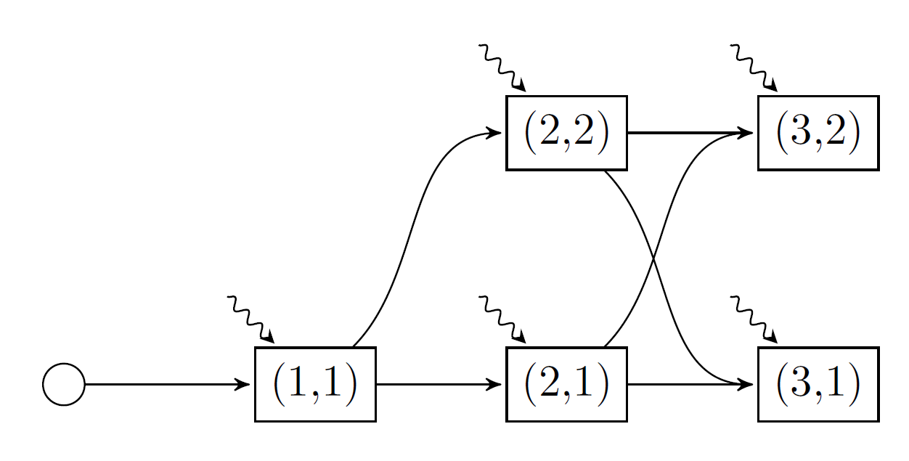

Markovian policy graphs
In our previous tutorials (An introduction to SDDP.jl and Uncertainty in the objective function), we formulated a simple hydrothermal scheduling problem with stagewise-independent random variables in the right-hand side of the constraints and in the objective function. Now, in this tutorial, we introduce some stagewise-dependent uncertainty using a Markov chain.
Formulating the problem
In this tutorial we consider a Markov chain with two climate states: wet and dry. Each Markov state is associated with an integer, in this case the wet climate state is Markov state 1 and the dry climate state is Markov state 2. In the wet climate state, the probability of the high inflow increases to 50%, and the probability of the low inflow decreases to 1/6. In the dry climate state, the converse happens. There is also persistence in the climate state: the probability of remaining in the current state is 75%, and the probability of transitioning to the other climate state is 25%. We assume that the first stage starts in the wet climate state.
Here is a picture of the model we're going to implement.

There are five nodes in our graph. Each node is named by a tuple (t, i), where t is the stage for t=1,2,3, and i is the Markov state for i=1,2. As before, the wavy lines denote the stagewise-independent random variable.
For each stage, we need to provide a Markov transition matrix. This is an MxN matrix, where the element A[i, j] gives the probability of transitioning from Markov state i in the previous stage to Markov state j in the current stage. The first stage is special because we assume there is a "zero'th" stage which has one Markov state (the round node in the graph above). Furthermore, the number of columns in the transition matrix of a stage (i.e. the number of Markov states) must equal the number of rows in the next stage's transition matrix. For our example, the vector of Markov transition matrices is given by:
T = Array{Float64,2}[[1.0]', [0.75 0.25], [0.75 0.25; 0.25 0.75]]3-element Vector{Matrix{Float64}}:
[1.0]
[0.75 0.25]
[0.75 0.25; 0.25 0.75]Make sure to add the ' after the first transition matrix so Julia can distinguish between a vector and a matrix.
Creating a model
using SDDP, GLPK
Ω = [
(inflow = 0.0, fuel_multiplier = 1.5),
(inflow = 50.0, fuel_multiplier = 1.0),
(inflow = 100.0, fuel_multiplier = 0.75),
]
model = SDDP.MarkovianPolicyGraph(
transition_matrices = Array{Float64,2}[
[1.0]',
[0.75 0.25],
[0.75 0.25; 0.25 0.75],
],
sense = :Min,
lower_bound = 0.0,
optimizer = GLPK.Optimizer,
) do subproblem, node
# Unpack the stage and Markov index.
t, markov_state = node
# Define the state variable.
@variable(subproblem, 0 <= volume <= 200, SDDP.State, initial_value = 200)
# Define the control variables.
@variables(subproblem, begin
thermal_generation >= 0
hydro_generation >= 0
hydro_spill >= 0
inflow
end)
# Define the constraints
@constraints(
subproblem,
begin
volume.out == volume.in + inflow - hydro_generation - hydro_spill
thermal_generation + hydro_generation == 150.0
end
)
# Note how we can use `markov_state` to dispatch an `if` statement.
probability = if markov_state == 1 # wet climate state
[1 / 6, 1 / 3, 1 / 2]
else # dry climate state
[1 / 2, 1 / 3, 1 / 6]
end
fuel_cost = [50.0, 100.0, 150.0]
SDDP.parameterize(subproblem, Ω, probability) do ω
JuMP.fix(inflow, ω.inflow)
@stageobjective(
subproblem,
ω.fuel_multiplier * fuel_cost[t] * thermal_generation
)
end
endA policy graph with 5 nodes.
Node indices: (1, 1), (2, 1), (2, 2), (3, 1), (3, 2)
For more information on SDDP.MarkovianPolicyGraphs, read Create a general policy graph.
Training and simulating the policy
As in the previous three tutorials, we train the policy:
SDDP.train(model; iteration_limit = 10)------------------------------------------------------------------------------
SDDP.jl (c) Oscar Dowson, 2017-21
Problem
Nodes : 5
State variables : 1
Scenarios : 1.08000e+02
Existing cuts : false
Subproblem structure : (min, max)
Variables : (7, 7)
VariableRef in MOI.LessThan{Float64} : (1, 2)
VariableRef in MOI.GreaterThan{Float64} : (5, 5)
AffExpr in MOI.EqualTo{Float64} : (2, 2)
Options
Solver : serial mode
Risk measure : SDDP.Expectation()
Sampling scheme : SDDP.InSampleMonteCarlo
Numerical stability report
Non-zero Matrix range [1e+00, 1e+00]
Non-zero Objective range [1e+00, 2e+02]
Non-zero Bounds range [2e+02, 2e+02]
Non-zero RHS range [2e+02, 2e+02]
No problems detected
Iteration Simulation Bound Time (s) Proc. ID # Solves
1 2.250000e+04 5.588397e+03 1.774290e-01 1 18
2 1.315909e+04 7.975336e+03 1.784511e-01 1 36
3 1.875000e+03 7.975336e+03 1.793420e-01 1 54
4 1.125000e+04 7.975336e+03 1.804352e-01 1 72
5 1.875000e+03 8.064005e+03 1.813622e-01 1 90
6 1.875000e+03 8.064005e+03 1.823020e-01 1 108
7 1.875000e+03 8.064005e+03 1.832440e-01 1 126
8 2.750000e+04 8.072917e+03 1.842592e-01 1 144
9 5.000000e+03 8.072917e+03 1.852090e-01 1 162
10 5.000000e+03 8.072917e+03 1.861811e-01 1 180
Terminating training
Status : iteration_limit
Total time (s) : 1.861811e-01
Total solves : 180
Best bound : 8.072917e+03
Simulation CI : 9.190909e+03 ± 5.775846e+03
------------------------------------------------------------------------------
Instead of performing a Monte Carlo simulation like the previous tutorials, we may want to simulate one particular sequence of noise realizations. This historical simulation can also be conducted by passing a SDDP.Historical sampling scheme to the sampling_scheme keyword of the SDDP.simulate function.
We can confirm that the historical sequence of nodes was visited by querying the :node_index key of the simulation results.
simulations = SDDP.simulate(
model,
sampling_scheme = SDDP.Historical([
((1, 1), Ω[1]),
((2, 2), Ω[3]),
((3, 1), Ω[2]),
]),
)
[stage[:node_index] for stage in simulations[1]]3-element Vector{Tuple{Int64, Int64}}:
(1, 1)
(2, 2)
(3, 1)This concludes our fourth tutorial for SDDP.jl. In the next tutorial, Plotting tools we discuss the plotting utilities included in SDDP.jl.
This page was generated using Literate.jl.